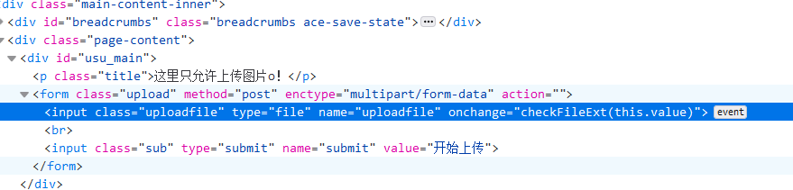

day3-web安全基础三（上午：XXE、文件上传、文件包含）
XML注入
原理
XXE -“xml external entity injection”，既”xml外部实体注入漏洞”。
概括一下就是”攻击者通过向服务器注入指定的xml实体内容,从而让服务器按照指定的配置进行执行,导致问题”，也就是说服务端接收和解析了来自用户端的xml数据,而又没有做严格的安全控制,从而导致xml外部实体注入。
实际上是因为后端在接收xml数据时，开启了外部实体解析，而且也没对传来的数据做任何的过滤等安全措施，因此导致产生漏洞。
挖掘方法
1 | #直接在 XML 文档中声明并引用 |
1 | 内部申明DTD格式 |
1 | <?xml version="1.0"?> |
提交后，可以看到前端返回了我们在xml中的DTD定义变量的值
XML外部实体注入
1 | <?xml version = "1.0"?> |
提交后，可以看到前端返回了我们在xml中的DTD定义变量的值
接下来。我们可以去构造一个恶意的payload，通过外部实体引用从而去获取后台服务器的本地文件信息(注：外部引用可以支持http，file，ftp等协议。)
提交后，页面显示了后台服务器的本地文件passwd的内容
常用利用方法
1.类似于 file://xxx 的，很明显可以造成敏感数据泄露。
2.可以利用 XXE 执行 SSRF 攻击。
3.利用盲 XXE 将泄露数据外带；通过报错信息检索数据。
4.XXE 与文件上传结合，造成 getshell。
修复方法
1.过滤用户提交的XML数据，如：关键词：<!DOCTYPE和<!ENTITY，或者，SYSTEM和PUBLIC。
2.不允许XML中含有任何自己声明的DTD
3.禁用外部实体
文件上传
原理
文件上传漏洞通常由于代码中对文件上传功能所上传的文件过滤不严或web服务器相关解析漏洞未修复而造成的，如果文件上传功能代码没有严格限制和验证用户上传的文件后缀、类型等，攻击者可通过文件上传点上传任意文件，包括网站后门文件（webshell）控制整个网站。
挖掘方法
查看发现是前端限制

将其去掉
checkFileExt(this.value)
http://192.168.88.104:8088/vul/unsafeupload/uploads/1234.php?x=phpinfo();
一句话木马：
常用利用方法
直接上传后门，控制网站，得到web权限（网站服务器权限）。
修复方法
1、对上传文件类型进行验证，除在前端验证外在后端依然要做验证，后端可以进行扩展名检测，重命名文件，MIME类型检测以及限制上传文件的大小等限制来防御，或是将上传的文件其他文件存储服务器中。
2、严格限制和校验上传的文件，禁止上传恶意代码的文件。同时限制相关上传文件目录的执行权限，防止木马执行。
3、对上传文件格式进行严格校验，防止上传恶意脚本文件；
4、严格限制上传的文件路径。
5、文件扩展名服务端白名单校验。
6、文件内容服务端校验。
7、上传文件重命名。
8、隐藏上传文件路径。
文件包含
原理
本地文件包含、远程文件包含
本地文件包含是指程序在处理包含文件的时候没有严格控制。利用这个漏洞，攻击者可以先把上传的文件、网站日志文件等作为代码执行或直接显示出来，或者包含远程服务器上的恶意文件，进而获取到服务器权限。
挖掘方法
1 | http://192.168.88.104:8088/vul/fileinclude/fi_local.php?filename=../../../../../etc/passwd&submit=%E6%8F%90%E4%BA%A4%E6%9F%A5%E8%AF%A2 |
常用利用方法
控制网站，得到web权限（网站服务器权限）。
修复方法
1、严格检查变量是否已经初始化。
2、对所有输入提交可能包含的文件地址，包括服务器本地文件及远程文件，进行严格的检查，参数中不允许出现./和../等目录跳转符。
3、严格检查文件包含函数中的参数是否外界可控。
1.过滤各种./. ,http:// ，https://
3.通过白名单策略，仅允许包含运行指定的文件,其他的都禁止。